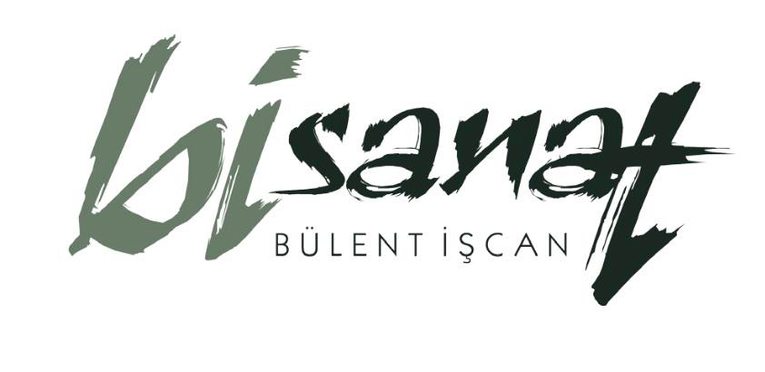
BÜLENT İŞCAN1972 Tekirdağ doğumlu ressam ve heykeltraş Bülent İşcan; 90'ı aşkın müzede, 10 ülkede sergilenen hiperrealist figürleriyle tarihi yeniden canlandırıyor.
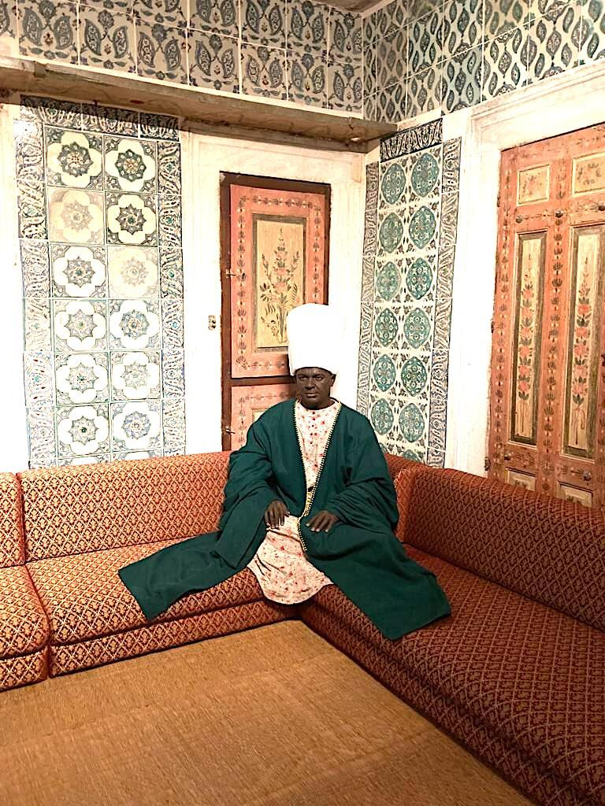
"Yaratıcılığı resimle sınırlı kalmadı; malzeme ve materyalle sınır tanımayan bir tasarım tutkusu ekledi."
1972'de Tekirdağ'da doğan Bülent İşcan, Marmara Üniversitesi Güzel Sanatlar Fakültesi Resim Bölümü mezunudur. Mezuniyetinin ardından resim yeteneğine heykel ve hiperrealist tasarımı ekledi; bugün Türkiye'nin en prestijli müzelerindeki figüratif heykellerde onun imzası bulunuyor.
Bunun yanında sinema, dizi, TV reklamı ve fotoğraf sektörüne yirmi yılı aşkın süredir dekor, aksesuar ve maket üretiyor — gerçeğe en yakın görünümü sahneye taşıma çabası, onu bugün heykel alanındaki hiperrealist yaklaşımına taşıdı.
Bülent İşcan, hiperrealizmin dünyadaki nadir temsilcilerinden biri. Her eser; ten, saç ve kumaşın gerçeğine en yakın dokusunu yakalayana dek defalarca kıyaslanarak şekillenir.
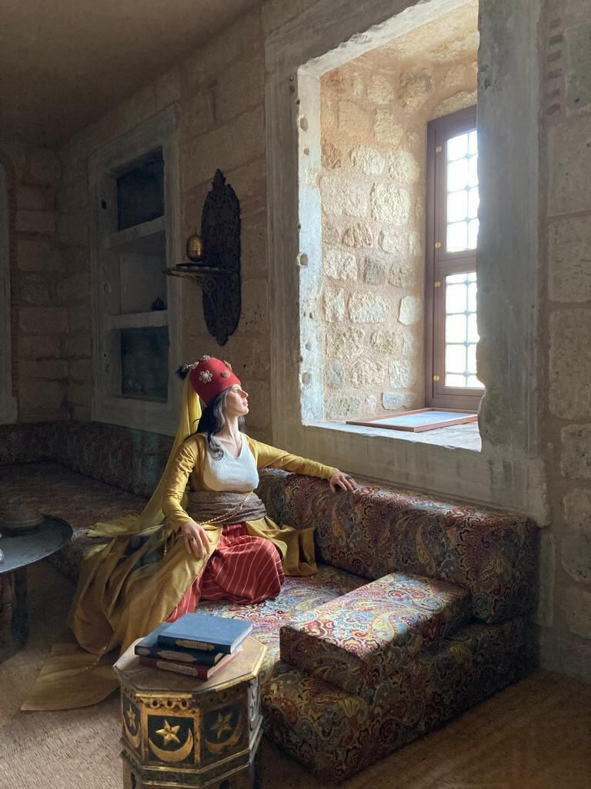
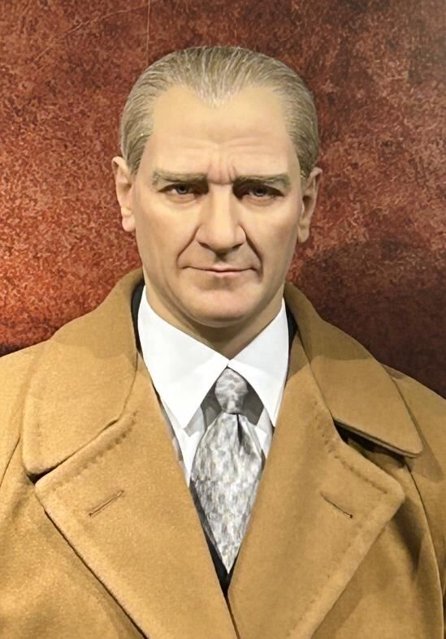
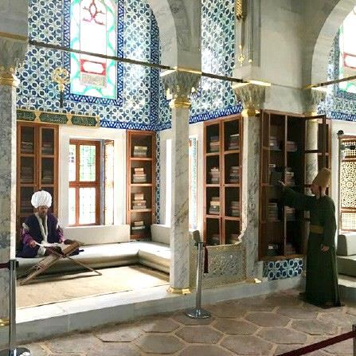
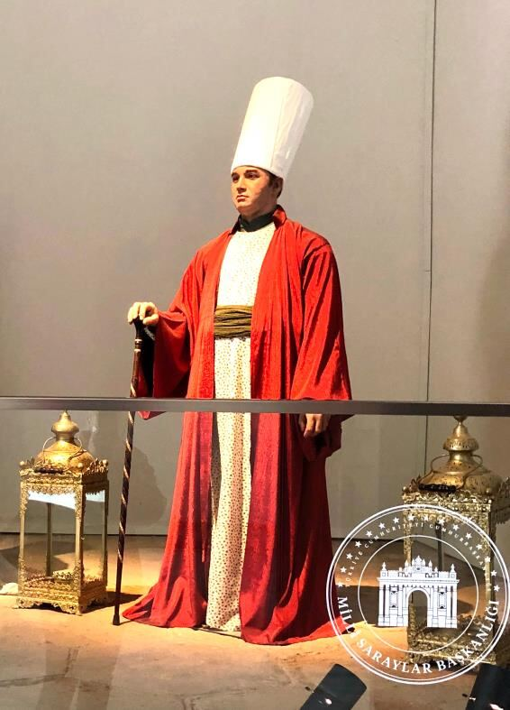
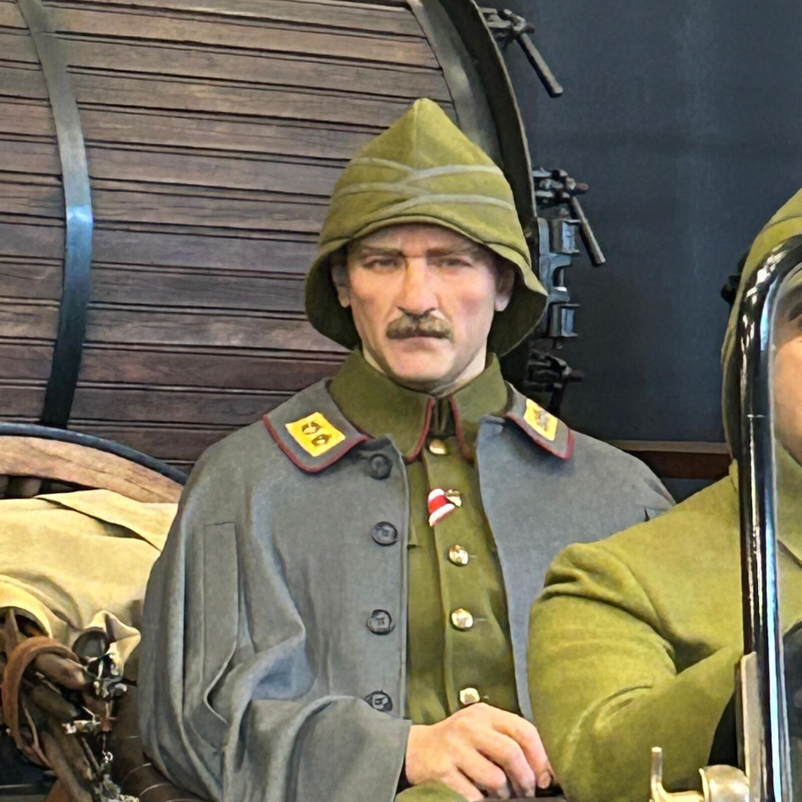
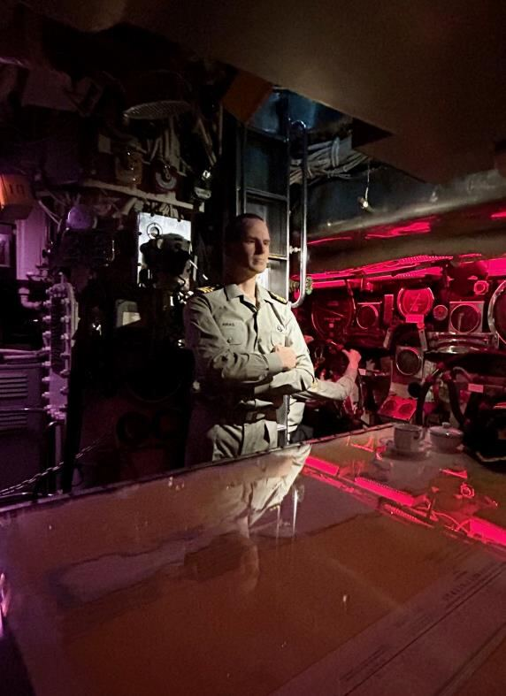
Topkapı Sarayı'ndan Macao'ya, Çanakkale siperlerinden bir mağara insanına — her figür, ait olduğu döneme özgü malzeme ve dokuyla yeniden kurulur.
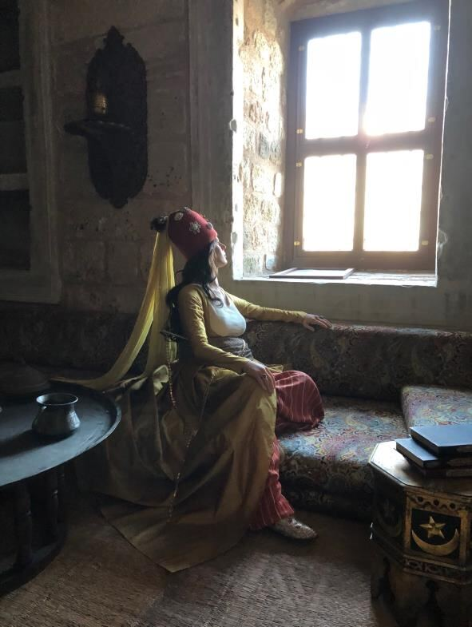
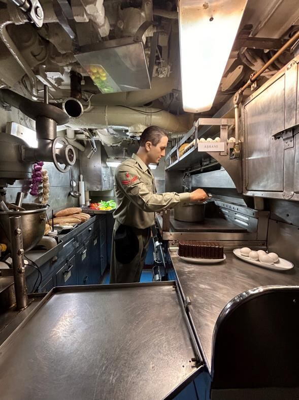
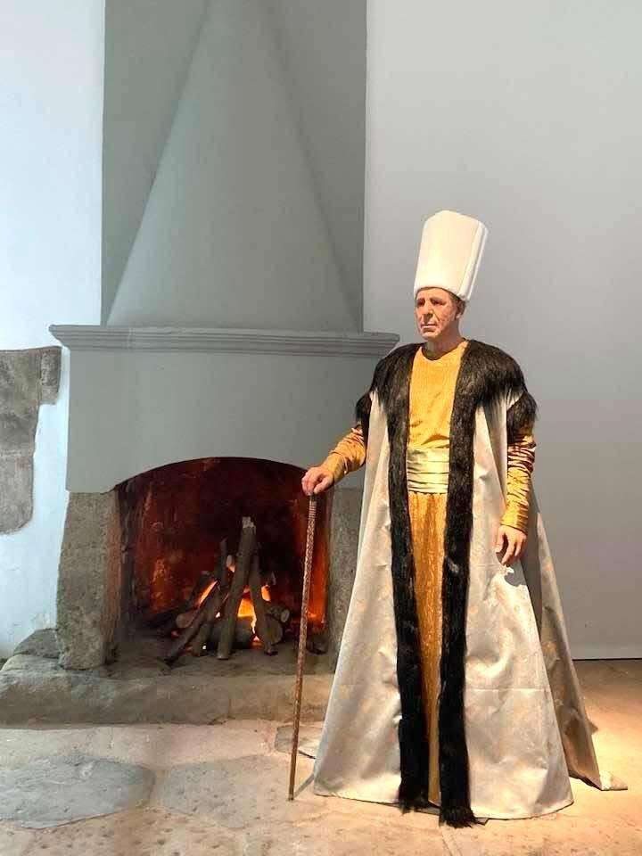
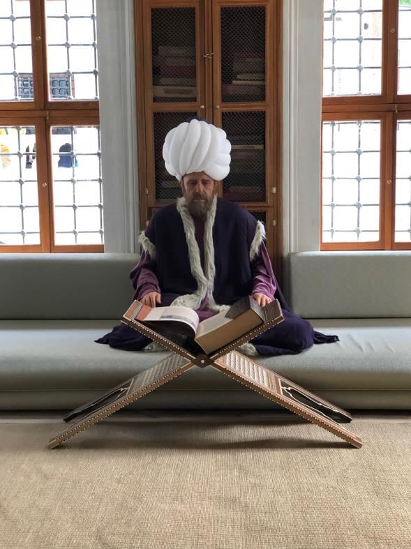
2012'den bu yana Türkiye sınırlarının ötesinde: Körfez'den Uzak Doğu'ya, Balkanlar'dan Avrupa'ya.
Yurt içi müze projeleri yıllara göre; sinema, dizi ve reklam dekor/aksesuar çalışmaları aşağıda.
Diorama, figüratif heykel, silikon/reçine uygulama, tarihi canlandırma ve sergi tasarımı için atölyeyle doğrudan görüşün.
Proje Görüşmesi Başlat